18. Process Data Graph
18.1. Introduction
In addition to the ability to record data in CSV files, the data logger plug-in allows you to visualize process data. This allows for real-time visualization of, e.g., process data changes. Use the push button Logging ❶ (see figure below) in the sidebar to display the process data graphs or show the logging view via the main menu : ❷.
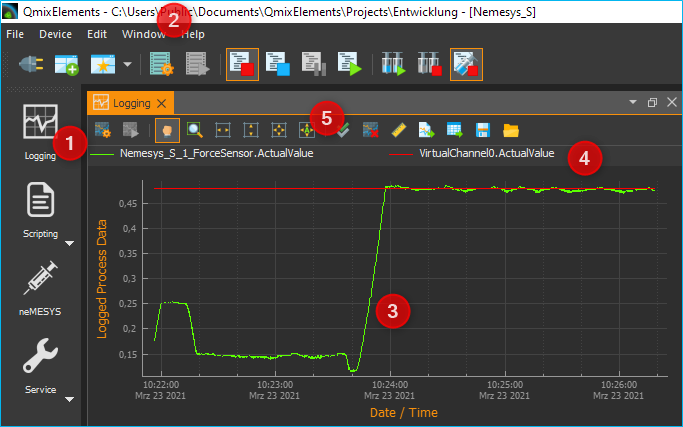
The main elements of the process data graph area are as follows:
Logging button – Click this to show the process data graphs.
View Menu- this can also be used to show and hide the process data graph
Graph canvas – This displays the curves of all process data sets that are being recorded.
Legend – The legend lists all data sets that are displayed with their respective colors. Here you can toggle between whether or not a curve is being displayed.
Toolbar – Here you find buttons to configure the data logging, to start and stop the recording and to navigate the display.
18.2. Toolbar
Opens the configuration dialog of the graphic process data logger. |
|
Toggles the recording of process data. |
|
|
Panning tool to move the currently displayed section of the graph. |
|
Draws a zoom-in frame to enlarge a desired area of the graph. |
|
Auto-scales the X axis to fit all process data on the screen. |
Auto-scales the Y axis to fit all process data on the screen. |
|
Auto-scales both X and Y axes to fit all process data on the screen. |
|
|
Activates auto-scaling: during a recording, both x- and y-axes are continuously rescaled to fit all process data on the screen. |
Show all curves. If curves are hidden, they are displayed again. |
|
|
Clear plot data. Deletes all data from the diagram. |
Toggle X-axis scale. Skalierung umschalten. This switches the scaling of the X-axis between absolute date/time stamp and relative time in seconds and milliseconds since the start of recording. |
|
|
Export plot image. Exports an image of the currently displayed section. |
Export CSV-File. Exports all data of the plot as CSV file |
|
Saves the plot data to a file that can later be reloaded into the plot |
|
Loads previously saved plot data |
{kind=link}
{kind=link}
{kind=link}
{kind=link}
{kind=link}
{kind=link}
{kind=link}
{kind=link}
{kind=link}
18.3. Configuration Dialog
18.3.1. Overview
Click on the button Configure process data graph in the toolbar to open the configuration dialog. This opens the Plot Logger Configuration dialog that contains the following main sections:
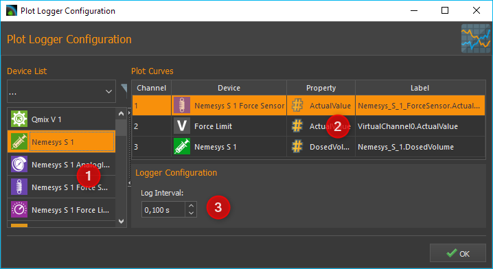
Device List – shows all devices that return data that may be logged. The filter selection box allows to pre-select a specific device type (e.g., valves).
Plot Curves– lists all data series or curves that are being recorded and displayed in the diagram.
Logger Configuration – in this section you find various settings to configure the data recording.
18.3.2. Plot Curves Table

Plot Curves tabulates the selected configuration of the graphic data logger. Each row represents exactly one curve in the diagram. The following columns are shown:
Channel – returns the channel number.
Device – lists the device name for each respective channel including its icon.
Property – shows the property of the respective device that is to be recorded. The data type is identified via a data-type specific icon.

Numerical value

Boolean value

Text value
Label – allows you to define a user-specific name for each channel. This label will also be used in the legend of the plotted graph.
To add and configure process data channels to the display logger, please proceed as detailed in the following sections.
18.4. Configure data logging
18.4.1. Step 1 – Adding Channels
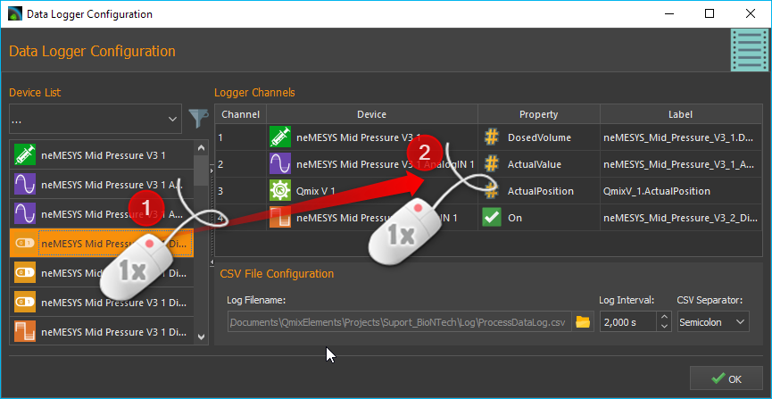
To add a channel you first have to add the relevant device to the Device Listof the Plot Logger Configuration. To do this, move the relevant item from the device list to the Plot Curves table using Drag-&-Drop. The new channel will be added at the position where you release the mouse button (see figure below).
Tip
To simplify the device selection process, the device list may be filtered for a relevant device type.
18.4.2. Step 2 – Selecting the Device Property
Select the device property that you want to record by double clicking into the Property field of the respective channel from Plot Curves table. This will display a drop-down list with all available device properties from which you may select the desired item (see figure below).

18.4.3. Step 3 – Changing the Channel Label
You may give a recorded property a customized name by changing the description in the column Label. This label will also be used to identify the respective curve in the diagram. To do this, double click into the respective field (see figure below) and type the new description.

Important
When a different device property is being selected, a new channel label will be assigned automatically. Therefore, the channel label should be changed after the device property has been selected.
18.4.4. Deleting Channels
In order to delete one or multiple channels from the Plot Curves list, first you have to mark the respective channels using the computer mouse. Now you may use either the keyboard’s Delete key or select the relevant item from the right-click context menu.
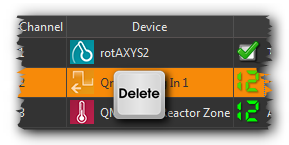

You may also delete the entire list in a single step by using the item of the context menu.
18.4.5. Step 4 – Defining the Recording Interval
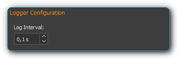
The Log Interval input box in the Logger Configuration section is to define the time interval at which data points for all channels are to be recorded. The minimum resolution is 0.1 seconds.
Important
Choose a log interval that is as large as possible and as small as necessary in order to minimize the amount of data that needs to be recorded and transmitted by the system.
The configuration will be saved and reloaded automatically upon exiting the Plot Logger Configuration dialog.
18.5. Start/Stop Data Logging
The data logging process may be started/stopped via the relevant button in the toolbar.
18.6. Diagram Navigation & Use
18.6.2. Changing the Displayed Section

The Pan Tool provides you with a simple way to move the displayed section of the plot area. It may be activated via its toolbar button and the displayed section may then be moved around using the mouse whilst keeping the left button pressed.
Important
Panning of the displayed plot section will deactivate the auto-scaling of the diagram axes.
18.6.3. Display Curve Values
When the Pan Tool is active, you can move the mouse pointer over a curve to display the value at that specific position.
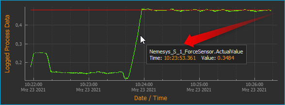
18.6.4. Zooming via the Mouse Wheel
Turning the mouse wheel whilst the pointer is within the plot area will allow you to adjust the displayed section of a graph by increasing (zooming in) or decreasing (zooming out) its zoom level.
Increase zoom level (zoom in) |
|
Decrease zoom level (zoom out) |
{kind=link}
{kind=link}
18.6.5. Display Section

The Zoom Tool allows you to directly select a specific area of the plot and increase its resolution. To do this, please proceed as follows (see figure below):
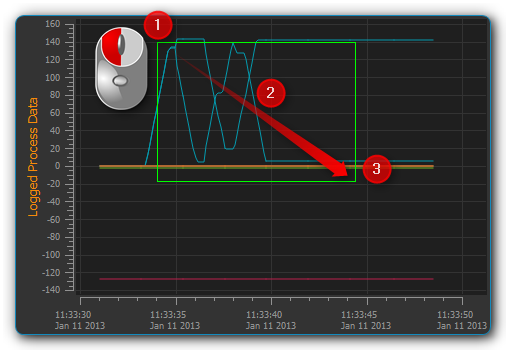
Using the mouse, left-click-and-hold into the plot area to set the first corner of the zoom frame.
Move the mouse pointer to define the size of the frame as desired.
Releasing the mouse button will finalize the size of the frame. The selected area will be scaled to the current graph size (zoom in).
18.6.6. Auto-Fit & Auto-Scale
The toolbar and the context menu both contain a number of tools to adjust what is displayed in the diagram, in particular to ensure that all or specific data are visible.
The following possibilities exist:
|
Rescales the X axis to display all current time data values for a given process data resolution. |
Rescales the Y axis to display all current process data values within a given time period. |
|
Rescales both X and Y axes to display all currently available data. |
|
|
(Re-)activates auto-scaling: as long as data are being recorded, both X and Y axes will be adjusted dynamically to ensure all data are being displayed. |
You may also activate auto-scaling for X and Y axes individually via the context menu:

Important
Zooming or panning within the displayed plot section will deactivate auto-scaling.
18.6.7. Show/Hide Individual Curves
To improve scaling and visibility, you may show or hide individual curves. To do this, right-click the desired item in the plot legend and select the desired function to either hide the corresponding curve only or all other but the corresponding curve as indicated in the figure below.

To revert to displaying all curves, activate the context menu from within the plot area and select the menu item (see figure below).

18.6.8. Select Curve Color
To choose a different curve color, right click an item in the plot legend. From the context menu select the menu item (see figure below).

In the color selection dialog which is now shown (figure below), you can choose any color.
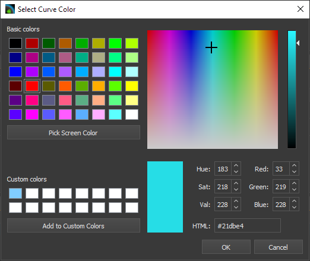
18.6.9. Exporting Plot Image

You may export a picture of the current diagram using the right-click context menu and selecting .

This will open a dialog box (see figure below) to define the location (folder) where the image is to be saved:
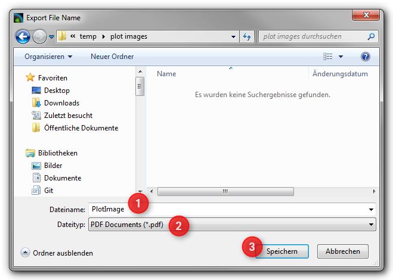
Please enter a name for the image file ❶ and select the desired file
type ❷. The export function supports standard image file formats
png, jpg... as well as scalable vector graphic formats pdf, svg....
To close the dialog and to start the image export, click Save ❸.
18.6.10. CSV Export
You can export all diagram data to a CSV file using the menu item.
18.6.11. Deleting of Diagram Data

You may clear the plot area and delete all data recorded since the start of the present recording using the context menu item . Recording will resume from this point.

18.6.12. Switching the scaling of the X-axis
You can switch the scaling of the X-axis between two different modes. By default, the X axis displays an absolute date/time stamp.
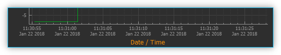
You can switch the X-axis to display the relative time in seconds and milliseconds. This means that the event t0 marks the point in time at which the recording was started.
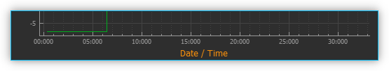
To toggle the axis, right-click in the diagram and select from the context menu.
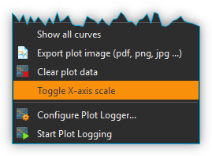
18.6.13. Saving plot data
If you click the Save Plot Data button, all plot data will
be saved to a file *.dat that can be loaded back into the plot
later.
18.6.14. Loading plot data
By clicking the Load Plot Data button, plot data that was previously saved with Save Plot Data can be loaded back into the plot. Only the curves that are present in the current configuration of the logger are loaded. I.e. if you record data, save it with Save Plot Data and load it again later, the logger configuration should be identical when saving and loading. If you change the logger configuration between saving and loading, e.g. remove channels, not all curves may be loaded.
18.7. Script Functions
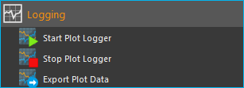
To automate the capture of data or to synchronize data capture with other processes, the graphical plot logger can be started and stopped using script functions. The corresponding functions can be found in the Logging category in the list of the available script functions.
18.7.1. Start Plot Logger
This function is used to start the graphical logger with the currently configured settings and channels. The current content of the plot is not deleted.
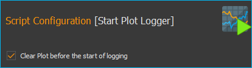
Check Clear Plot before the start of logging if you want to clear all plot data before logging. Starts.
18.7.2. Stop Plot Logger
{kind=link}
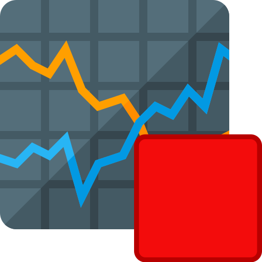
This function stops the current logging of process data into the process data plot.
18.7.3. Export Plot Data
{kind=link}
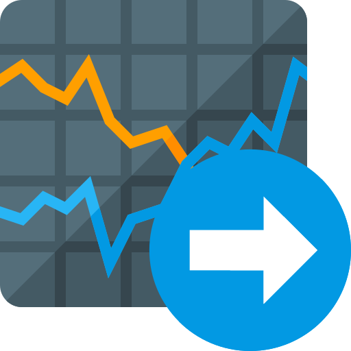
This function allows you to export the plot data to different formats. In the configuration area you can choose the file name and the saving location by clicking on the folder icon ❶. For the saving location, you should keep the default location within the project folder.
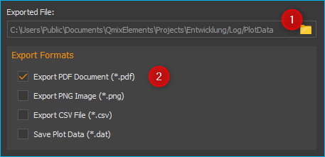
In the Export Formats ❷ area, select all formats you want the plot data to be exported in. The software saves the files with the selected file name + timestamp + the file extension of the export format (see example in figure below):
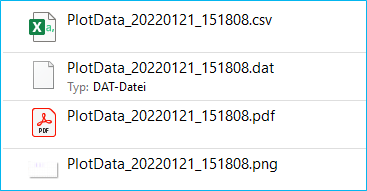